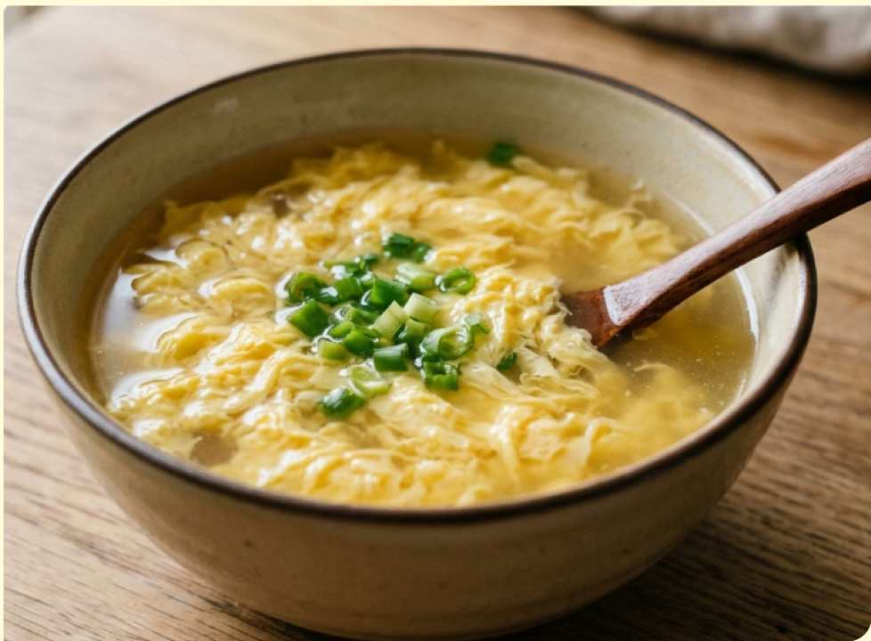
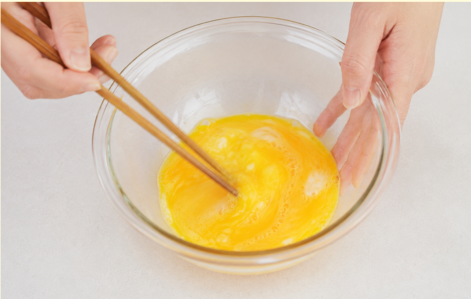
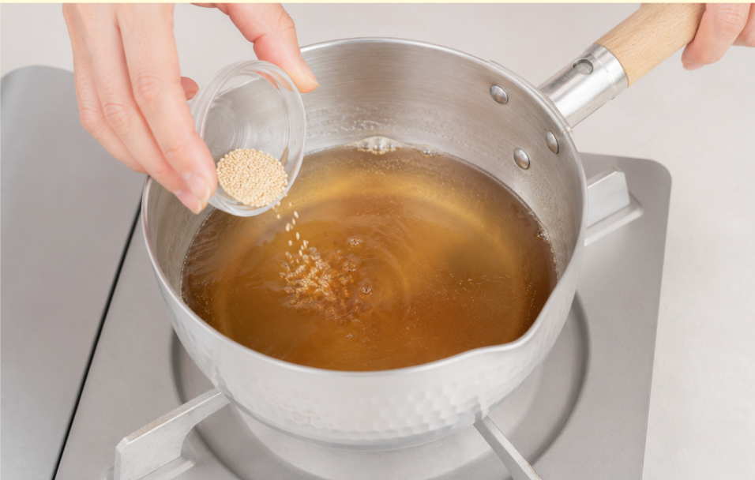
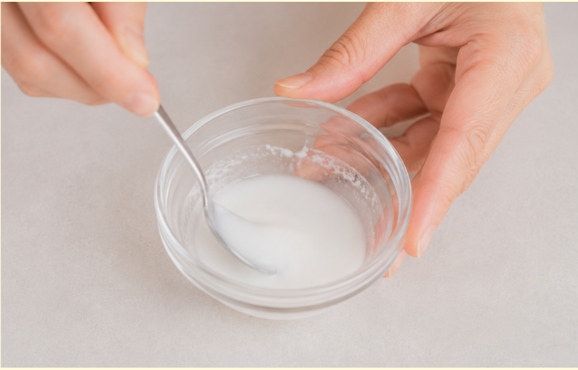
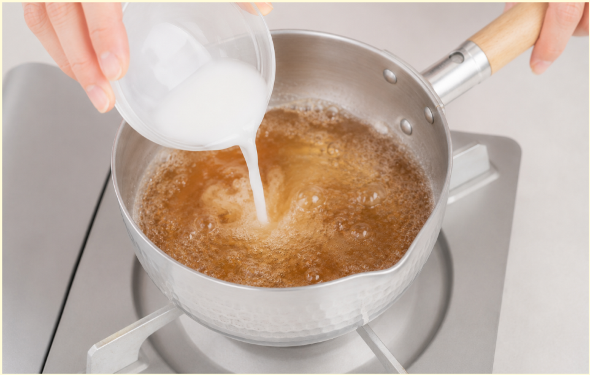
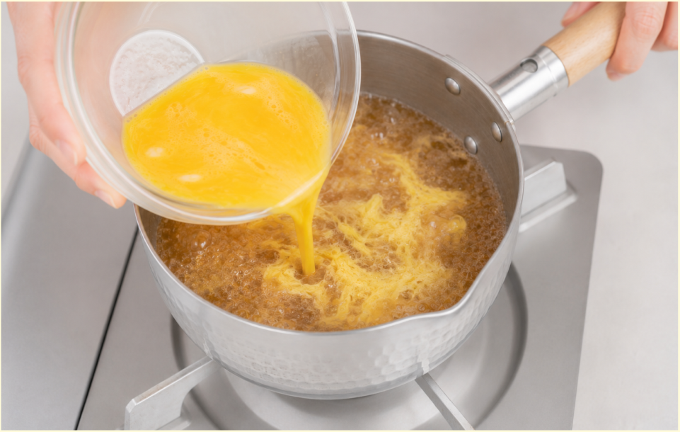
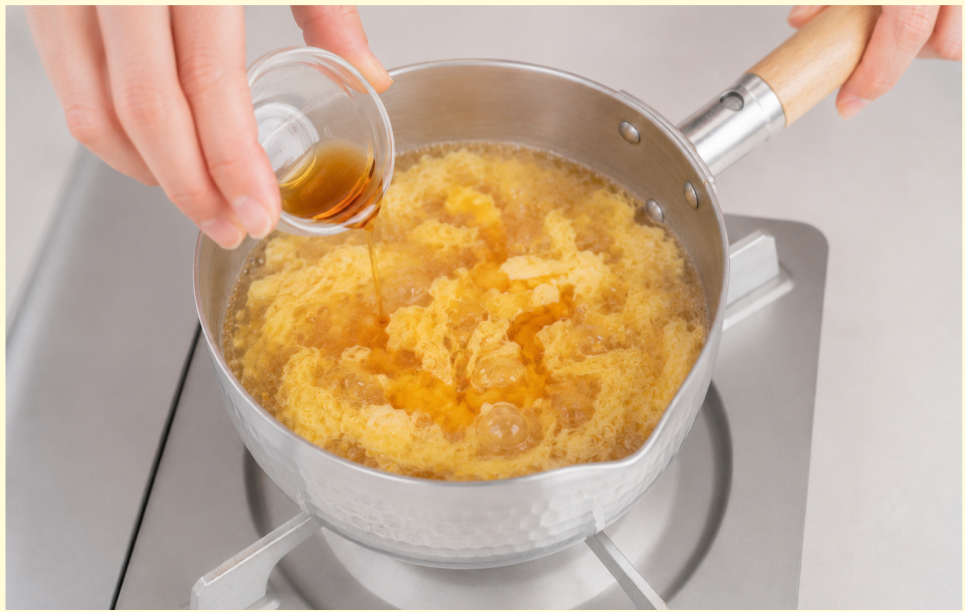
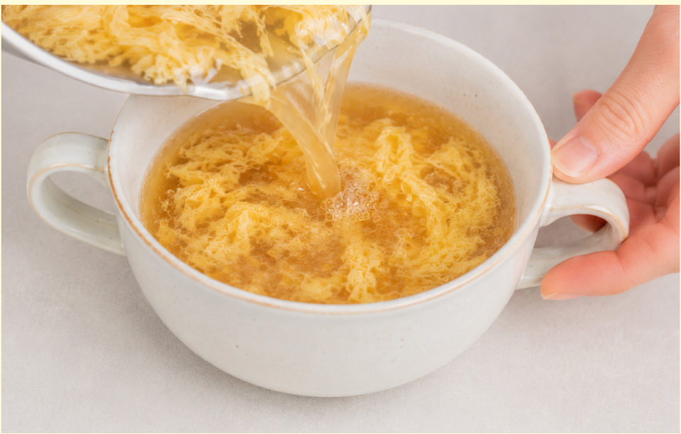

材料（１人分）
- ・卵1個
- ・水200ml
- ・鶏ガラスープの素小さじ1
- ・しょうゆ小さじ1/2
- ・ごま油小さじ1/2
- ・片栗粉小さじ2
必要な道具
- ・小鍋
- ・ボウル
- ・小さめの器
- ・菜箸
- ・おたま
- ・計量スプーン
注目ポイント
-
 火加減に注意
火加減に注意 -
 包丁を使わない
包丁を使わない -
 味見推奨
味見推奨
作り方
① ボウルに卵を割り入れ、箸で軽く溶きます。 白身は少し残るくらいで大丈夫です。

② 小鍋に水、鶏ガラスープの素、しょうゆを入れます。 中火にかけ、沸騰するまで温めます。

③ 小さい器に片栗粉と水小さじ2を混ぜ、 水溶き片栗粉を作ります。

④ 沸騰したスープに水溶き片栗粉を 少しずつ加えます。 軽くとろみがついたらOKです。

⑤ スープをおたまでゆっくり混ぜ、 軽い渦を作ります。 溶き卵を細く流し入れます。

⑥ 卵がふんわり固まったら ごま油を加えます。 お好みで味見をしながら塩・しょうゆで味を調えます。

⑦ 器に注いで完成です。 刻みネギをのせても美味しく食べられます。

調理のコツ
卵を入れた直後に強く混ぜると、
卵が細かく崩れてしまいます。
卵を細く流し入れたら、
少し待つとふんわり仕上がります。
アレンジ
さっぱりした味にしたい場合は、
しょうゆを少し減らしましょう。
しっかり中華風にしたい場合は、
ごま油を少し増やしましょう。
わかめや豆腐を加えると、
食べ応えがアップします。